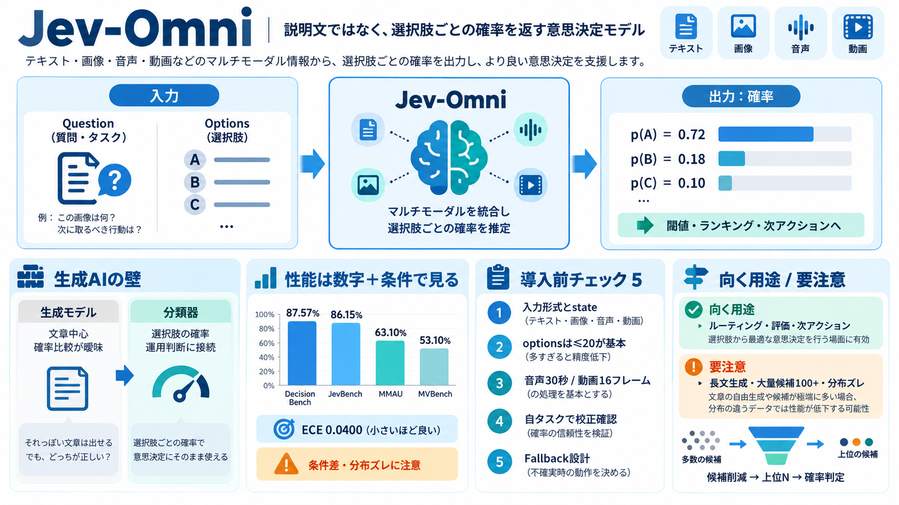

Gemma 4 Technical Report
| | | | | | | | | | | --- --- --- --- --- | | | | | Gemma 4 | | | | | | Gemma 3 | | Benchmark | Metri…

| | | | | | | | | | | --- --- --- --- --- | | | | | Gemma 4 | | | | | | Gemma 3 | | Benchmark | Metri…
Gemma 4 12B delivers performance nearing our larger 26B MoE model on standard benchmarks, but at less than half the tota…
| Benchmark | Gemma 4 31B | Gemma 4 26B A4B | Gemma 4 12B Unified | Gemma 4 E4B | Gemma 4 E2B | Gemma 3 27B (no think) |…
| | Gemma 4 31B | Gemma 4 26B A4B | Gemma 4 12B Unified | Gemma 4 E4B | Gemma 4 E2B | Gemma 3 27B (no think) | --- --…
| | | | | --- | | | mchusma 3 months ago | parent | prev | next (javascript:void(0)) I think its even more puz…